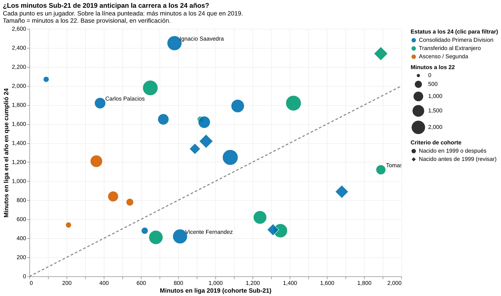

En el fútbol chileno existe una creencia instalada desde la promulgación de la regla juvenil en 2015: que a los 22 años, justo cuando el reglamento deja de premiar por secretaría a los futbolistas formados en casa, las promesas caen al vacío. Sin embargo, los datos de la cohorte del Campeonato Nacional 2019 demuestran que el verdadero destino del talento joven dista de ser una condena uniforme; es, más bien, una triple bifurcación.
Al seguir la huella de los 25 futbolistas que sumaron rodaje en aquel torneo, el desplome inmediato no aparece. Lejos de extinguirse tras perder la condición reglamentaria, 17 de los 25 jugadores incrementaron sus minutos en cancha a los 22 años respecto a su año de debut. La mediana de minutos jugados subió de 890 a 1.420. La regla funcionó como vitrina: cuerpos técnicos como los de Universidad Católica, Colo-Colo o Huachipato consolidaron a nombres que pedían cancha no por obligación administrativa, sino por jerarquía técnica.
Visualización de Datos: Trayectoria de la Cohorte 2019

La dispersión real se manifiesta al llegar a los 24 años, momento biológico en que la madurez deportiva coincide con el fin de los primeros contratos formativos. Allí emergen con nitidez tres caminos:
- Exportación temprana: Ocho jugadores lograron dar el salto al extranjero (32% de la muestra), como Tomás Alarcón, Diego Valencia, Williams Alarcón y Víctor Méndez.
- Hegemonía doméstica: Trece futbolistas (52%) se transformaron en titulares estables de Primera División, como Ignacio Saavedra.
- Estancamiento o descenso: Cuatro jugadores (16%) terminaron relegados a la Primera B o Segunda División, expuestos en el cuadrante inferior de la visualización.
El gráfico no muestra una guillotina a los 22 años, sino un embudo estructural a los 24. La regla Sub-21 abre una puerta temporal, pero la supervivencia posterior sigue dependiendo de la espalda financiera y la paciencia competitiva del club que los cobija.